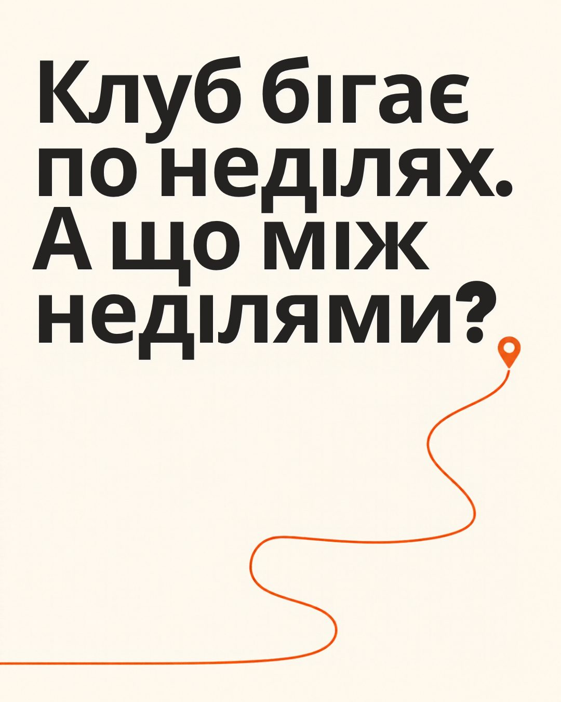
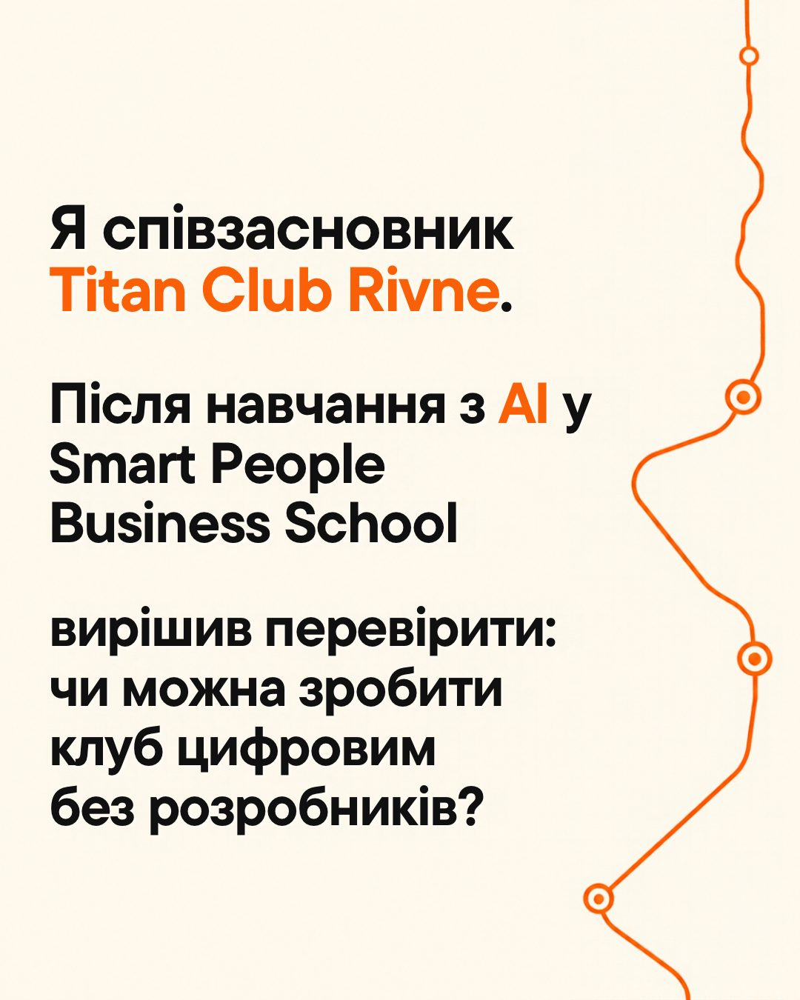
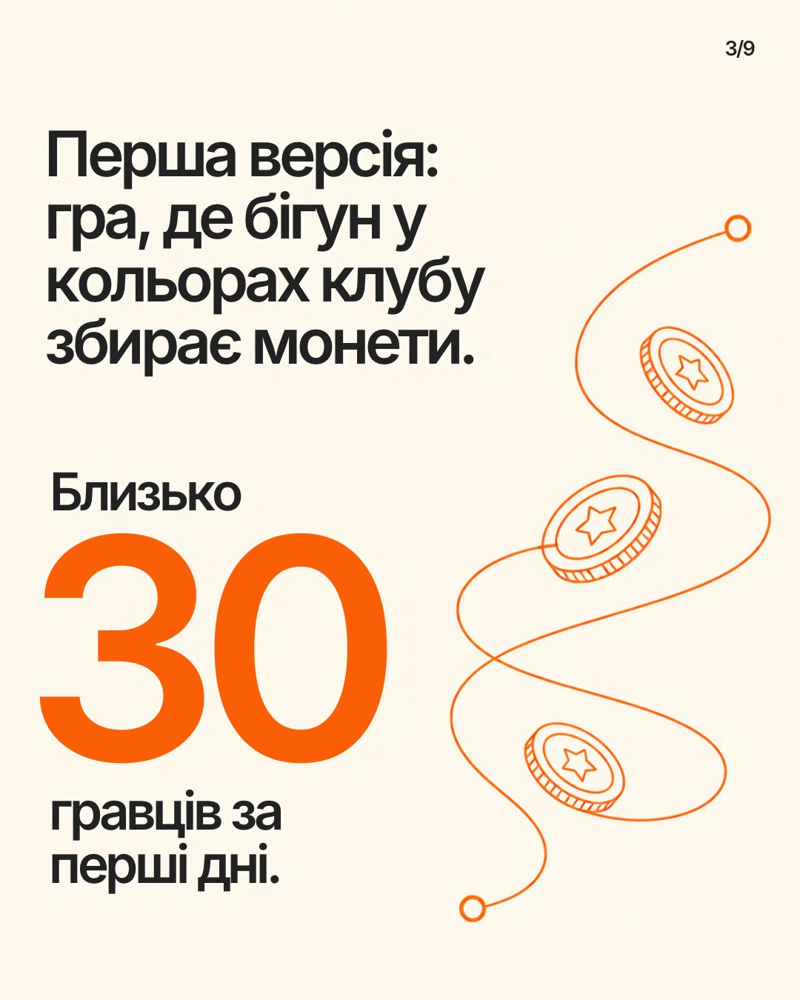
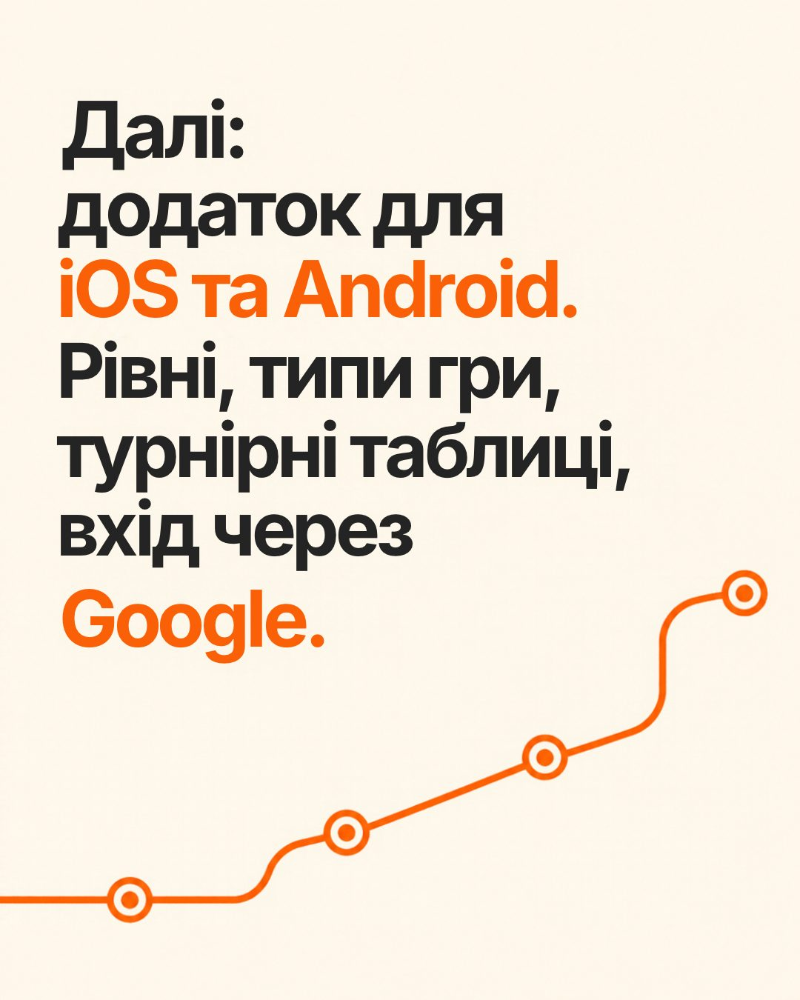
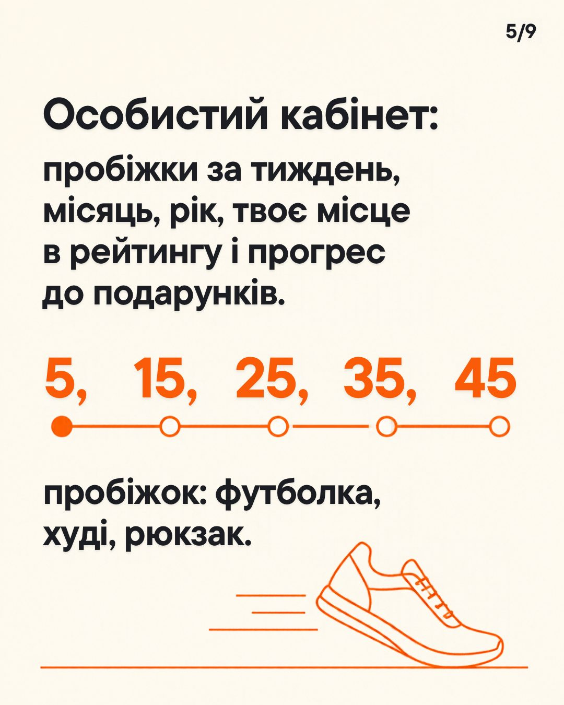
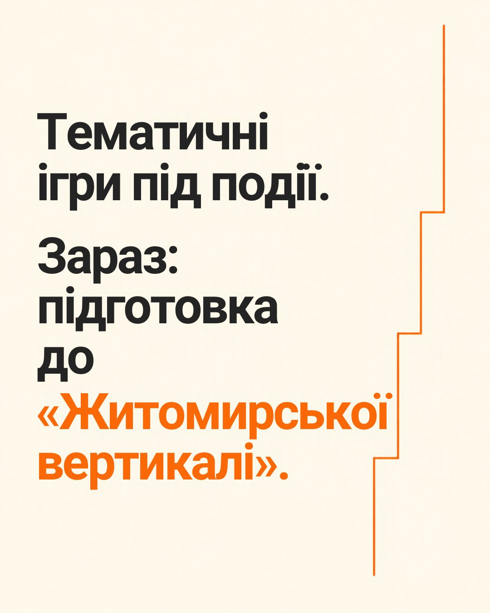
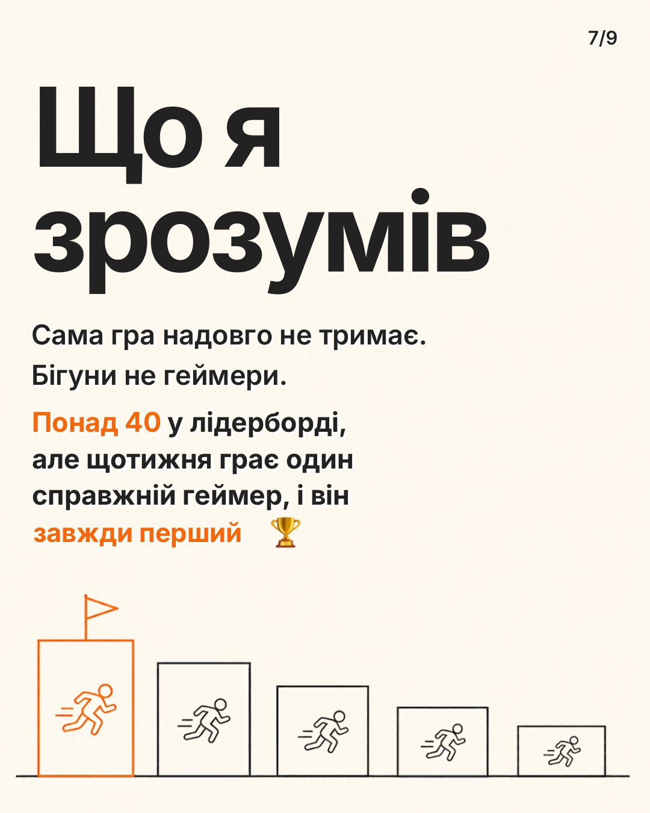
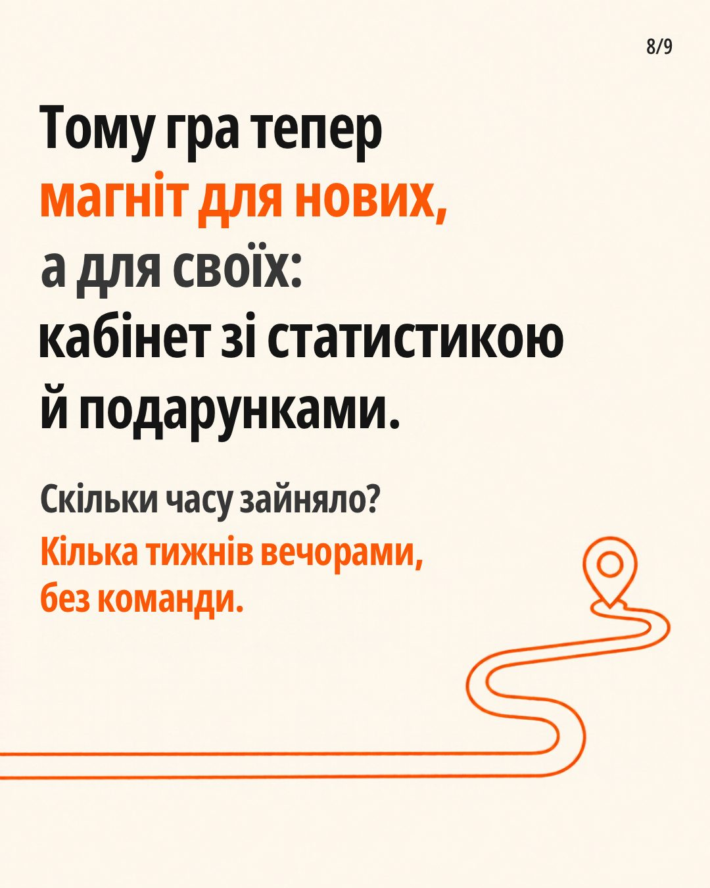
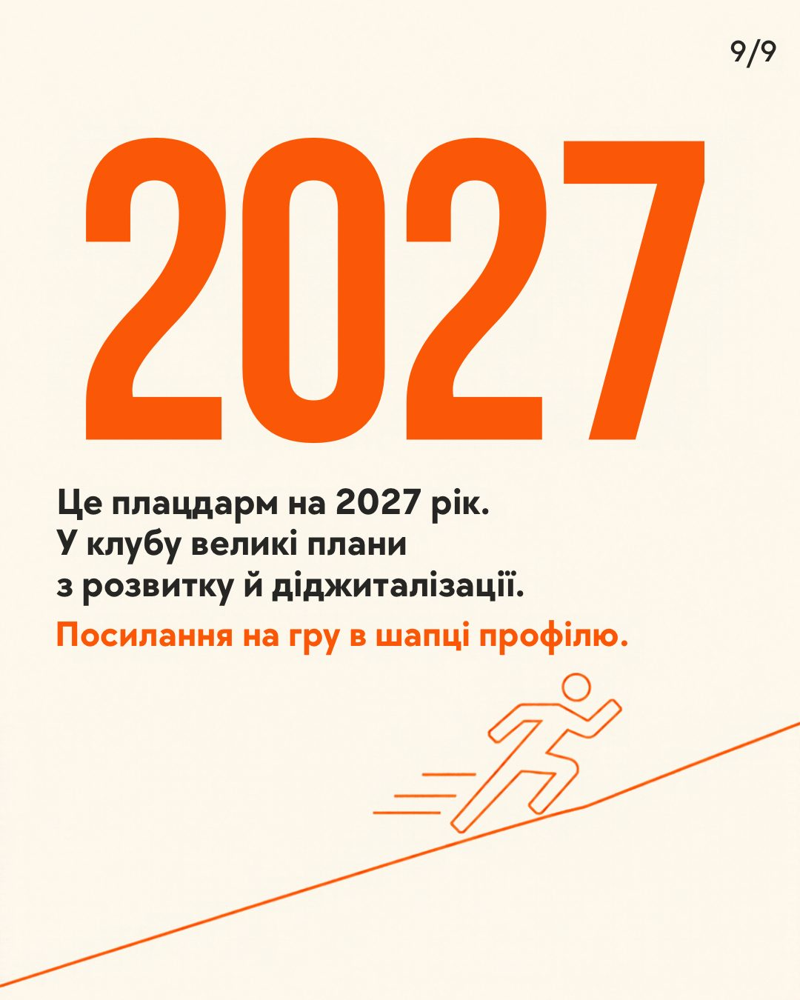

Я співзасновник Titan Club Rivne. Після навчання з AI у Smart People Business School вирішив перевірити, чи можна зробити клуб цифровим без розробників. Вийшли гра, клубний застосунок, адмінка й промо.
Гра на сторінціБігун у кольорах клубу біжить вулицями Рівного й збирає монети.
Застосунок для iOS та AndroidРівні, кілька типів гри, турнірні таблиці, вхід через Google.
Особисті кабінетиПробіжки за тиждень, місяць і рік, місце в рейтингу й прогрес до подарунків за 5, 15, 25, 35 і 45 неділь: футболка, худі, рюкзак. Справжні імена бачать лише учасники клубу.
Тематичні ігри під подіїЗараз — трейл для підготовки до «Житомирської вертикалі».
Карусель для Instagram









9 слайдів · натисніть, щоб збільшити
Промо-ролики
Плюс 3D-логотип клубу на початку сторінки.
3D-ролик Titan Run29 с · для сторіз і ReelsРолик про режими15 с · без звуку
Що всередині
1 · Гра і застосунок бігунів5 режимів
Раннер, який виріс у клубний застосунок: рейтинги, профіль бігуна з ачівками й гардеробом, прокачка персонажа тренуваннями, статистика недільних пробіжок і шлях до нагород.
Завантажуєш фото, і застосунок оформлює пост або сторіз у стилі клубу: час, темп, дистанція й контур маршруту. Хвилина замість кількох застосунків і монтажу.
3 · Адмінка клубузакритий доступ
Окремий застосунок для організаторів із входом через Google і ролями. Те, що раніше жило в таблицях і месенджерах, тепер в одному місці.
Відвідуваність недільАтлетиВходи учасниківПромокодиПробіг за рікЕкспорт у Google-таблицю
Що я зрозумів
Сама гра надовго не тримає: бігуни не геймери. У лідерборді понад 40 людей, але щотижня стабільно грає один справжній геймер, і він завжди перший.
Тому гра тепер магніт для нових, а для своїх — кабінет зі статистикою й подарунками. Це плацдарм на 2027 рік: у клубу великі плани з розвитку й діджиталізації.